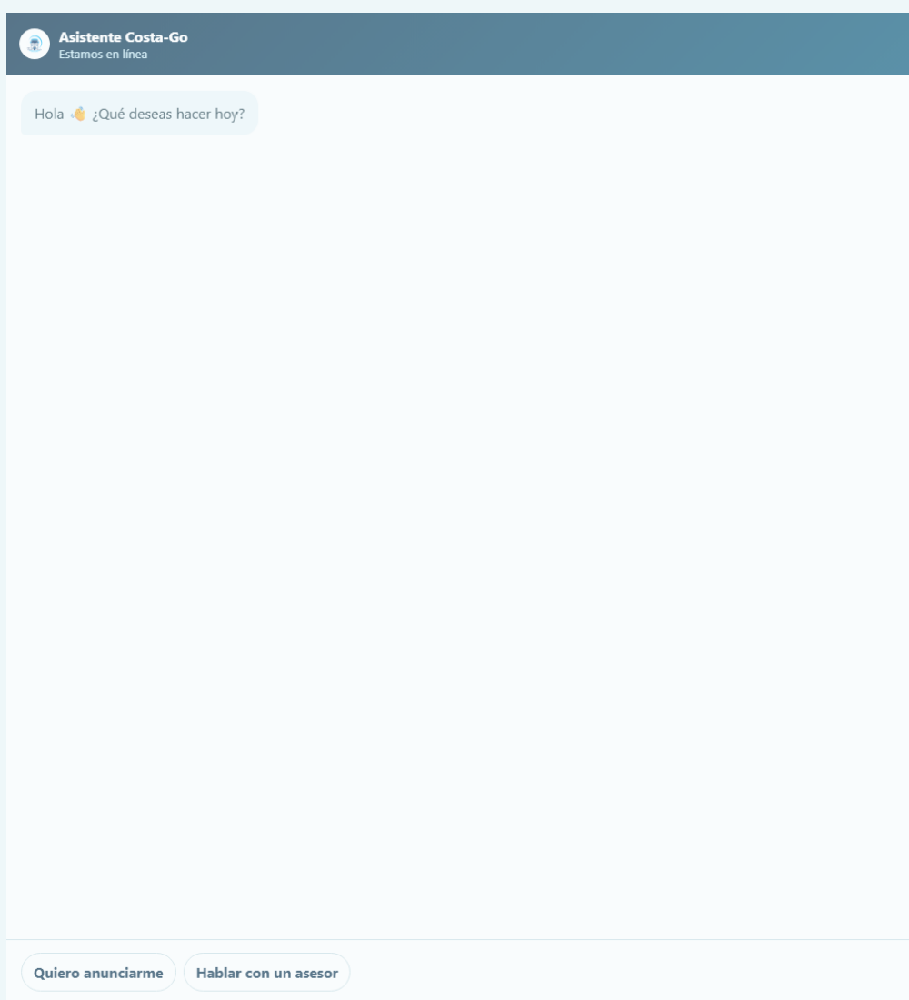

Manual funcional
Comercial: chat, leads y anunciantes
Documentación oficial del ecosistema Costa-Go
Documentación oficial del ecosistema Costa-Go
| Campo | Descripción |
|---|---|
| Módulo | Comercial: chat, leads y anunciantes |
| Usuarios | Comercios, asesores comerciales y administración |
| Acceso | costa-go.com/anunciarme/ y Panel → Comercial y publicidad |
| Fuente de verdad | API y base PostgreSQL de Costa-Go |
Captar solicitudes comerciales desde web o app y darles seguimiento en el mismo backend sin duplicar conversaciones.
Elemento verificado en la interfaz o flujo actual.
Elemento verificado en la interfaz o flujo actual.
Elemento verificado en la interfaz o flujo actual.
Elemento verificado en la interfaz o flujo actual.
Elemento verificado en la interfaz o flujo actual.
Elemento verificado en la interfaz o flujo actual.
| Código interno | Presentación operativa |
|---|---|
| NEW | Nuevo |
| IN_PROGRESS | En curso |
| QUALIFIED | Calificado |
| REQUIRES_CONTACT | Solicita asesor |
| CONVERTED | Convertido |
| LOST | No convertido |

Captura real obtenida de la versión web publicada, sin datos privados.